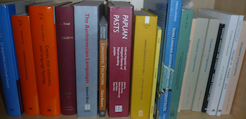

Angela Terrill
Punctilious is a copy-editing, proof reading and indexing service. I copy-edit and proof-read scientific books, book chapters, journal articles, grant proposals and dissertations. I mostly work with texts by non-native English speakers who are publishing in mainstream English-language venues, but I also work on polishing texts from native English speakers. I focus on perfecting spelling, grammar, style, clarity and consistency in clients' work. I also check internal cross-references, and check in-text citations and reference lists.
If you are short of time and money I can do proof-reading instead of copy-editing. Proof-reading is just checking for spelling and minor grammatical errors.
While I am copy-editing or proof-reading, I can also format your document to your publisher's or journal's style.
I also compile indexes.
I have a PhD in linguistics, and 16 years' experience in academic publishing, from first draft to final published product. As an Australian based in Sweden, I can edit your work for US, European or other markets. I offer a swift and professional service at a reasonable price.
Contact me by email for a quote.
